Initiation & Preprocessing: Visium
initiation-and-preprocessing-visium.Rmd1. Initiation
To initiate a SPATA2 object directly from the Visium
output use the function initiateSpataObjectVisium(). It
works for both slide types, those with a capture area of 6.5mm x 6.5mm
(referred to as VisiumSmall in SPATA2) and of 11mm x 11mm
(referred to as VisiumLarge in SPATA2). This example
vignette uses data from a 6.5mm x 6.5mm. You can download the folder here.
Save the folder under a directory that you later provide as input for
directory_visium.
library(SPATA2)
object <-
initiateSpataObjectVisium(
sample_name = "UKF269T",
directory_visium = "initiate_VisiumSmall" # adjust to your liking
)
# show overview
object## An object of class SPATA2
## Sample: UKF269T
## Size: 3217 x 33538 (spots x molecules)
## Memory: 220.31 Mb
## Platform: VisiumSmall
## Molecular assays (1):
## 1. Assay
## Molecular modality: gene
## Distinct molecules: 33538
## Matrices (1):
## -counts (active)
## Registered images (1):
## - lowres (582x600 px, active, loaded)
## Meta variables (1): sample2. Image processing
(Beta; still in progress since it does not work as well on images with fluent tissue background transition.)
Image processing is not required. However, it facilitates the
integration of histological features as displayed by the histology
image, the Visium platform allows to integrate. The goal of image
processing is to identify the precise spatial outline of the tissue on
the histology slide. The function processImage() is a
wrapper around identifyPixelContent() and
identifyTissueOutline(..., method = "image"). Please refer
to the documentation of either function to obtain more information.
object <- identifyPixelContent(object)The results of identifyPixelContent() can be plotted
with plotImageMask() and
plotPixelContent().
plotImageMask(object)
plotPixelContent(object)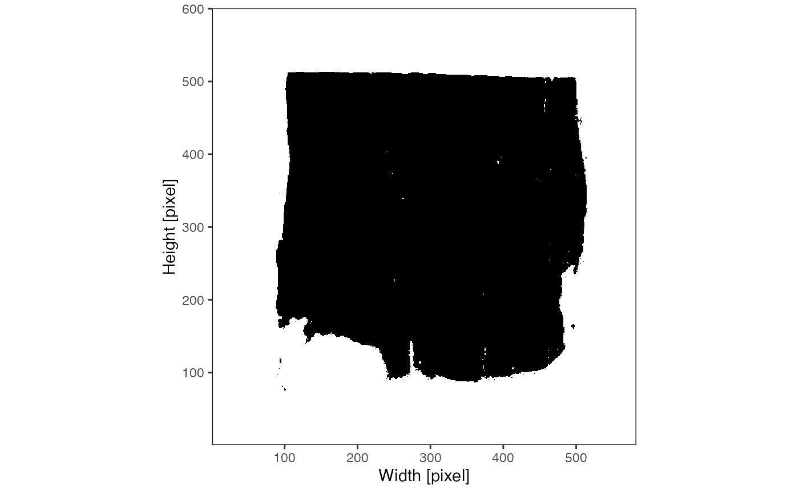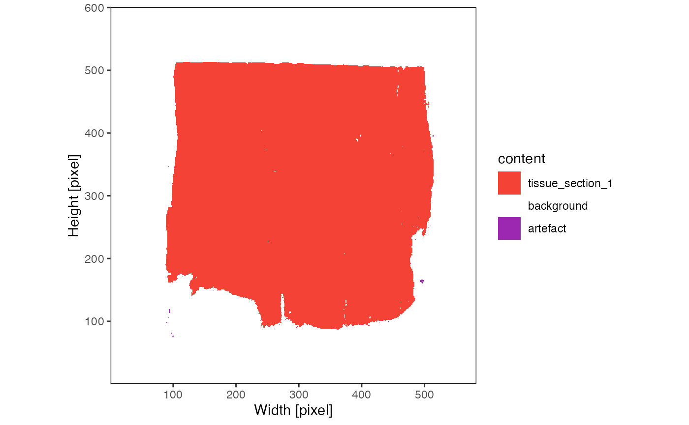
The results of
identifyTissueOutline(..., method = "image") are best
visualized by setting outline = TRUE with the
plotImage() function.
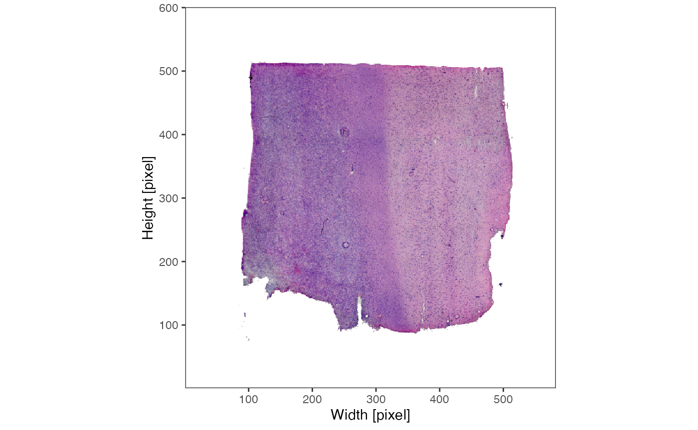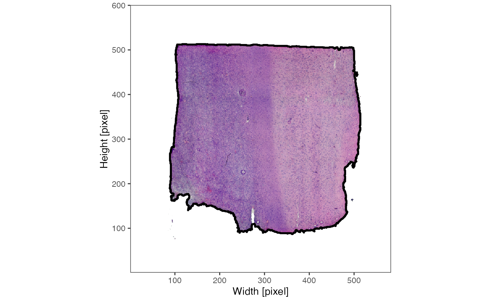
3. Spatial processing
This step should not be skipped! Many functions in SPATA2 need to
know where the edge of the tissue section is and they need to know if
there are multiple tissue sections. This kind of data is not provided
with the standard output of most platforms and needs to be computed.
With spatial processing we particularly refer to the identification of
spatial outliers - observations that are part of the data set but lie
too far away from the contiguous tissue section to be considered part of
the data set that is of actual interest. In case of the Visium platform
they are usually artefacts. The function
identifyTissueOutline(..., method = "obs") uses the DBSCAN algorithm to
identify potential spatial outliers. The results are stored in a
variable called tissue_section which also contains information
to which tissue section each observation was assigned in case of
multiple tissue sections.
# this is the default input for the visium platform and has already been
# called in initiateSpataObjectVisium().
# if the results do not satisfy you, you can run it over and over again with
# different parameter inputs
object <- identifyTissueOutline(object, method = "obs", eps = "125um", minPts = 3)
plotSurface(object, color_by = "tissue_section", pt_clrp = "tab20")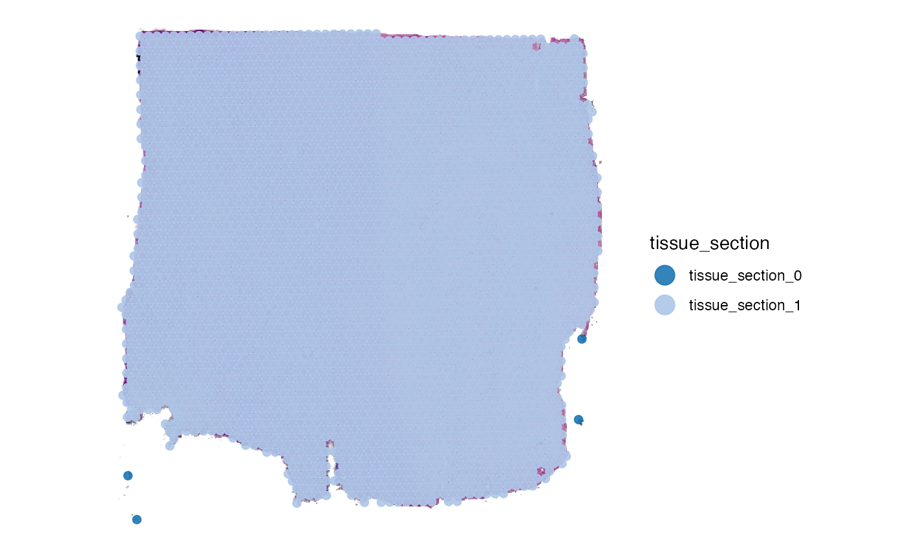
3.1 Tissue outline parameters
DBSCAN requires two important parameters, namely eps and
minPts. Depending on the platform SPATA2 defaults to
different parameter inputs - those that have worked well for us in the
past. You can, however, change the parameter input. Consider this
example mouse brain data set with two tissue sections obviously
separated.
object_example <- loadExampleObject("LMU_MCI")
object_example <- identifyTissueOutline(object_example, eps = "125um", minPts = 3)
plotSurface(object_example)
plotSurface(object_example, color_by = "tissue_section")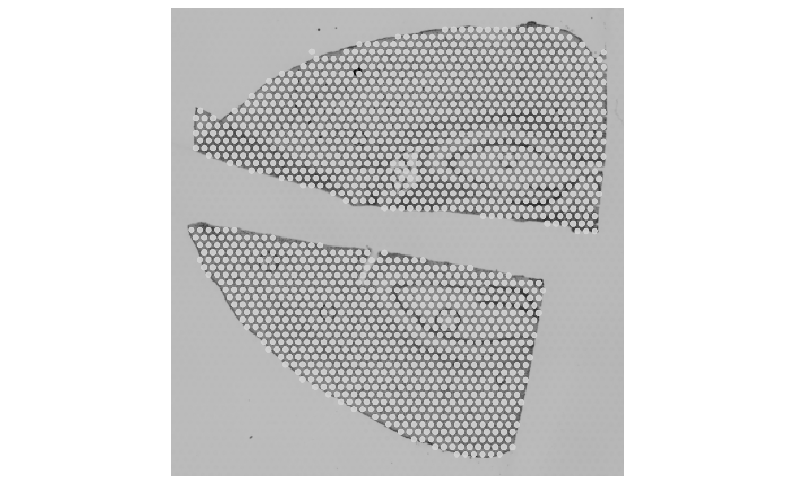
There are no spatial outliers in contrast to the glioma sample UKF269T. But what happens if we change the parameter input?
# example 1: increase eps
object_example <- identifyTissueOutline(object_example, eps = "1.5mm", minPts = 3)
out_example_1 <-
plotSurface(object_example, color_by = "tissue_section") +
ggpLayerScaleBarSI(object_example, sb_dist = "1.5mm", sb_pos = c(200, 100)) +
labs(subtitle = "eps = 1.5mm")
# example 2: increase minPts
object_example <- identifyTissueOutline(object_example, eps = "125um", minPts = 6)
out_example_2 <-
plotSurface(
object = object_example,
color_by = "tissue_section",
clrp_adjust = c("tissue_section_0" = "black")
) +
ggpLayerScaleBarSI(object_example, sb_dist = "125um", sb_pos = c(200, 100)) +
labs(subtitle = "minPts = 6")
# left
out_example_1
# right
out_example_2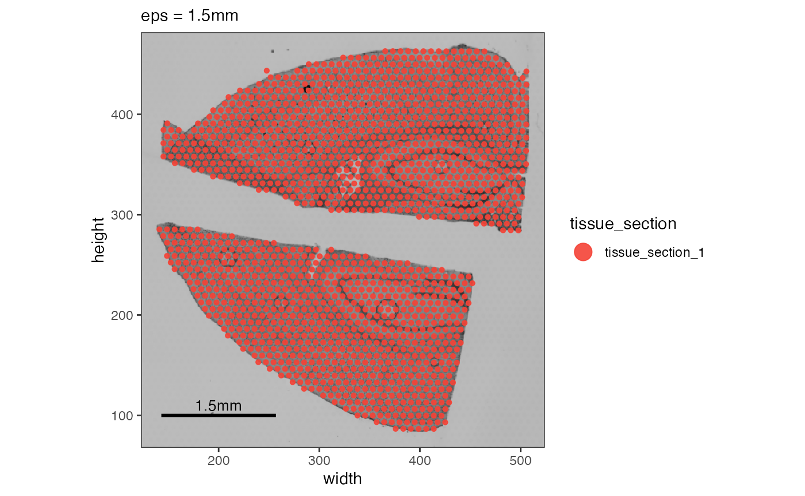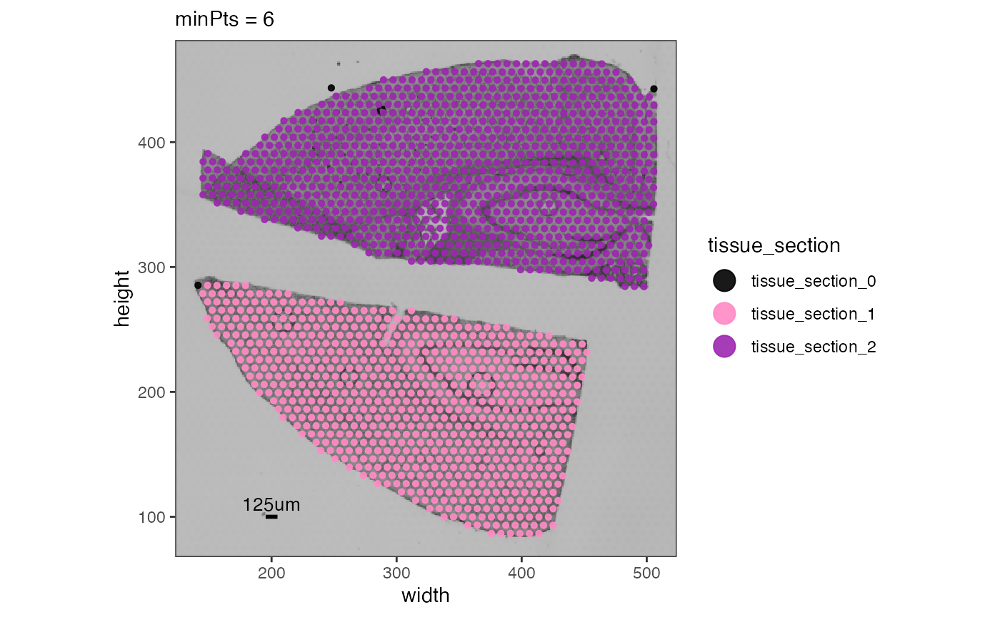
In the first example, we increase the eps parameter -
the radius starting from an observation in which is screened for
adjacent neighbors. 1.5 mm though is way too much. The lower spots of
the upper tissue section find neighbors in the upper spots of
the lower section. In the second example we increase minPts
to a value of 6. Given the arrangement of Visium spots each should have
6 neighbors, right? No! Spots on the edge belong to the tissue but they
do not have 6 neighbors within they reach of eps (defaults
to 125um) but usually only 3 to 4 spots.
Are the black spots outliers or do they belong to the tissue section?
You can choose to keep or remove them.
3.2 Spatial outliers
What has been defined as tissue_section_0 could not be
assigned to a tissue section and is considered a spatial outlier. Use
identifySpatialOutliers() to make it official. In case of
the glioma sample UKF269T it is quite obvious that the spots
marked as outliers do not belong to the tissue.
# uses the results of identifyTissueOutline() to create a logical variable called sp_outlier
object <- identifySpatialOutliers(object, method = "obs")
plot_with_outliers <- plotSurface(object, color_by = "sp_outlier", clrp_adjust = c("TRUE" = "blue"))
# remove where sp_outlier == TRUE
object <- removeSpatialOutliers(object)
plot_without_outliers <- plotSurface(object, color_by = "sp_outlier")
# left plot
plot_with_outliers
# right plot
plot_without_outliers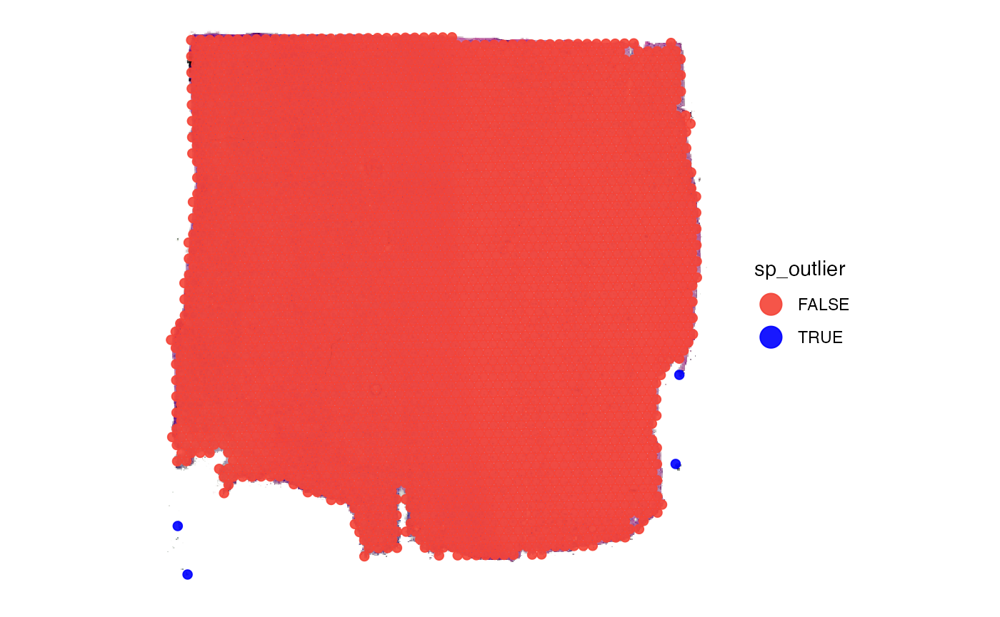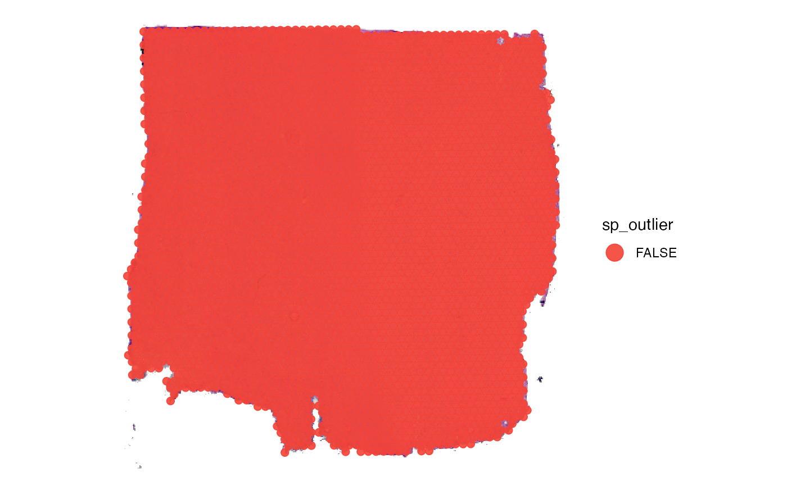
Note, identifySpatialOutliers() can also identify
outliers based on the tissue outline identified with
identifyTissueOutline(..., method = "image"). Also both
methods, image and obs can be combined. Refer to the
documentation of the function for more information.
4. Data processing
These steps are about additional noise removal as well as about processing raw counts.
4.1. Data cleaning
First you might want to remove certain genes from the raw count
matrix. There are wrappers for certain steps like
removeGenesStress() and
removeGenesZeroCounts(). Individual genes can always be
removed with removeGenes().
# before
nGenes(object)
## [1] 33538
# removes stress genes
object <- removeGenesStress(object)
# removes genes that were not detected in any of the observations
object <- removeGenesZeroCounts(object)
# afterwards
nGenes(object)
## [1] 21556In some cases there are observations - in case of Visium barcoded
spots - left with no counts at all. If this is the case
removeObsZeroCounts() removes them. If there are none
nothing happens.
# before
nObs(object)
## [1] 3213
# check for and remove observations with zero counts
object <- removeObsZeroCounts(object)
# afterwards
nObs(object)
## [1] 3213Afterwards, you can compute meta data for the observations.
object <- computeMetaFeatures(object)
# plot left
plotSurface(object, color_by = "n_counts_gene")
# plot right
plotSurface(object, color_by = "n_distinct_gene")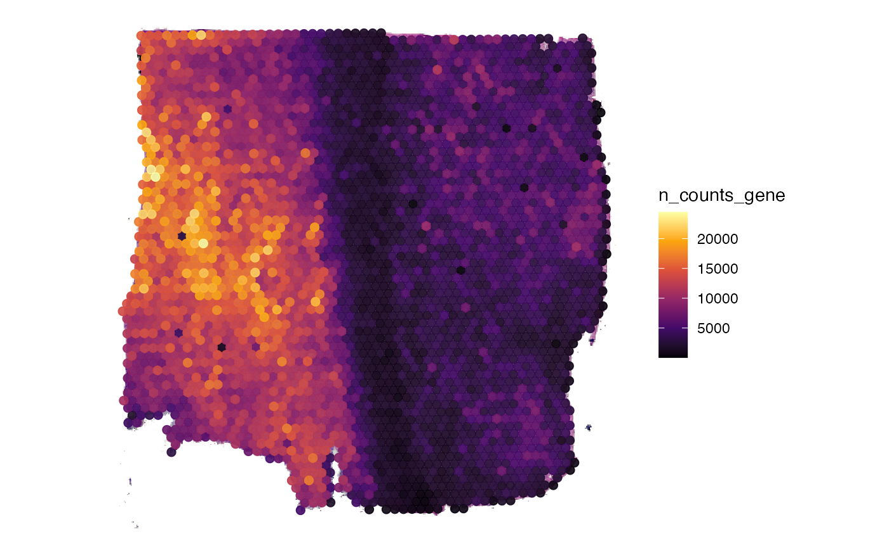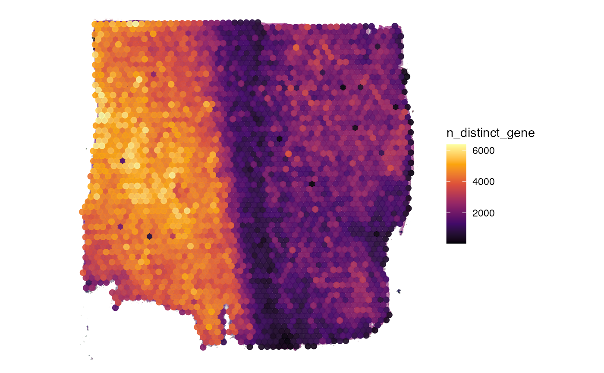
4.2 Matrix processing
The SPATA2 object is initiated with a raw count matrix.
For almost all downstream analysis steps it is recommended to use
processed matrices. The first step is usually log-normalization. To
create a normalized matrix use normalizeCounts(). It uses
Seurat::NormalizeData() in the background. The input
options for method correspond to the options in this
function from the Seurat package. By default, the normalized matrix is
named after input for method, activated and thus used by
default in downstream analysis and visualization. The function
normalizeCounts() can be called multiple times with
different inputs for method which populates the list of
processed matrices in the respective assay. Furthermore, processed
matrices can be added with addProcessedMatrix() if you want
to create them with SPATA2-extern functions. The default matrix that is
used can be set with activateMatrix(). By default,
normalizeCounts() activates the processed matrix it has
created.
# obtain matrix names prior to normalization
getMatrixNames(object)
## [1] "counts"
plot_before <-
plotSurface(object, color_by = "MAG") + labs(color = "MAG\n(Counts)")
# create log normalized matrix
object <- normalizeCounts(object, method = "LogNormalize")
## Normalizing layer: counts
## 02:03:11 Active matrix in assay 'gene': 'LogNormalize'
# obtain matrix names after normalization
getMatrixNames(object)
## [1] "counts" "LogNormalize"
# check active matrix
activeMatrix(object)
## [1] "LogNormalize"
plot_afterwards <-
plotSurface(object, color_by = "MAG") + labs(color = "MAG\n(logNorm)")
# left plot
plot_before
# right plot
plot_afterwards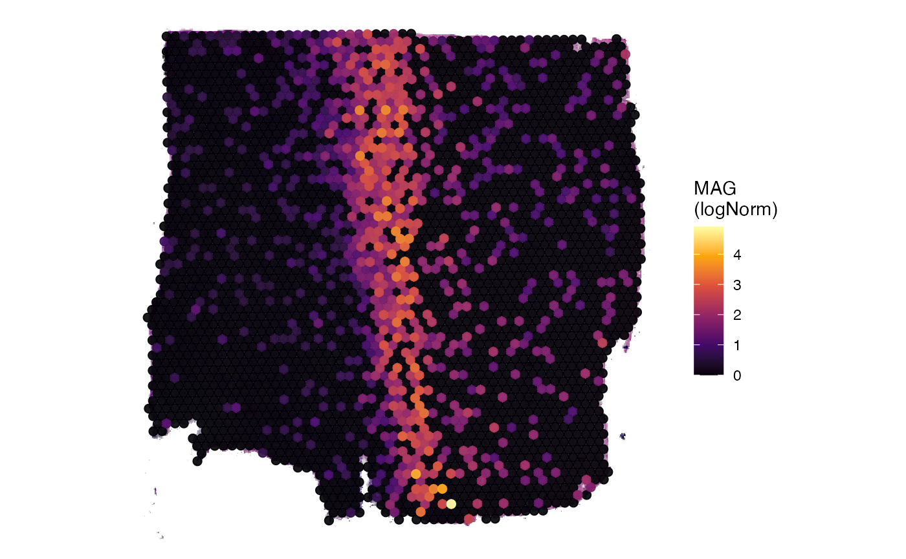
5. Spatially variable genes
Since spatial transcriptomics is all about spatial pattern of gene expression you might want to identify genes with a spatial pattern that is non-random. We recommend the prefiltering for these kind of genes, for instance, in our SPATA2 intern Spatial Annotation Screening algorithm. Spatially variable genes can, for instance, be identified using the wrapper around SPARKX (Zhu et al., 2021).
# results are stored inside the SPATA2 object
object <- runSPARKX(object, verbose = FALSE)## ## ===== SPARK-X INPUT INFORMATION ====
## ## number of total samples: 3213
## ## number of total genes: 21556
## ## Running with single core, may take some time
## ## Testing With Projection Kernel
## ## Testing With Gaussian Kernel 1
## ## Testing With Gaussian Kernel 2
## ## Testing With Gaussian Kernel 3
## ## Testing With Gaussian Kernel 4
## ## Testing With Gaussian Kernel 5
## ## Testing With Cosine Kernel 1
## ## Testing With Cosine Kernel 2
## ## Testing With Cosine Kernel 3
## ## Testing With Cosine Kernel 4
## ## Testing With Cosine Kernel 5
# get genes with a p-value < 0.01
sparkx_genes <- getSparkxGenes(object, threshold_pval = 0.01)
str(sparkx_genes)## chr [1:13950] "RPL22" "ID3" "MARCKSL1" "PHC2" "RPS8" "WLS" "GNG5" "RPL5" ...
# visualize in space
plotSurfaceComparison(object, color_by = head(sparkx_genes, 6), nrow = 2)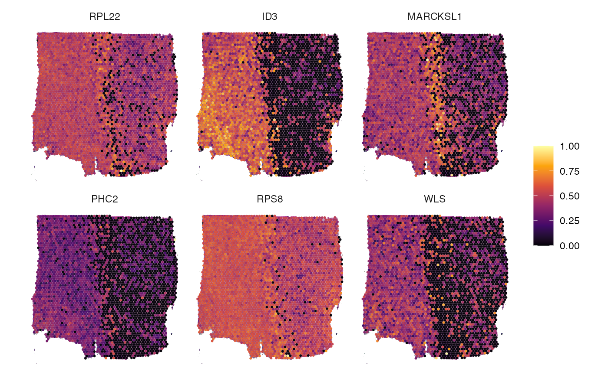
6. Conclusion and more data sets
That’s it. The object can be used for any downstream analyses such as dimensional reduction, clustering, spatial annotation screening or spatial trajectory screening. Refer to tab Tutorials for more links. Furthermore, you can skim our curated data base of spatial data sets for those of platform VisiumSmall or VisiumLarge using SPATAData.
# load package
library(SPATAData)
# filter for samples from platform VisiumHD
sourceDataFrame(platform %in% c("VisiumSmall", "VisiumLarge"))## # A tibble: 161 × 33
## sample_name comment donor_id donor_species grade histo_class histo_class_sub
## <chr> <chr> <chr> <chr> <chr> <chr> <chr>
## 1 HumanBreast… NA NA Homo sapiens NA NA NA
## 2 HumanGliobl… NA NA Homo sapiens IV Glioblasto… NA
## 3 HumanTonsil… NA NA Homo sapiens NA NA NA
## 4 HumanColore… NA NA Homo sapiens NA NA NA
## 5 HumanGliobl… NA NA Homo sapiens NA Glioblasto… NA
## 6 HumanKidney… NA NA Homo sapiens NA NA NA
## 7 HumanLungCa… NA NA Homo sapiens NA NA NA
## 8 HumanOvaria… NA NA Homo sapiens NA NA NA
## 9 Breast_Canc… NA NA Homo sapiens NA NA NA
## 10 Breast_Canc… NA NA Homo sapiens NA NA NA
## # ℹ 151 more rows
## # ℹ 26 more variables: institution <chr>, lm_source <dttm>, organ <chr>,
## # organ_part <chr>, organ_side <chr>, pathology <chr>, platform <chr>,
## # pub_citation <chr>, pub_doi <chr>, pub_journal <chr>, pub_year <dbl>,
## # sex <chr>, source <chr>, tags <chr>, tissue_age <dbl>, web_link <chr>,
## # workgroup <chr>, mean_counts <dbl>, median_counts <dbl>,
## # modality_gene <lgl>, modality_metabolite <lgl>, modality_protein <lgl>, …